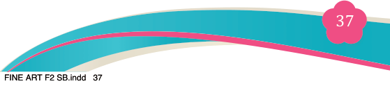
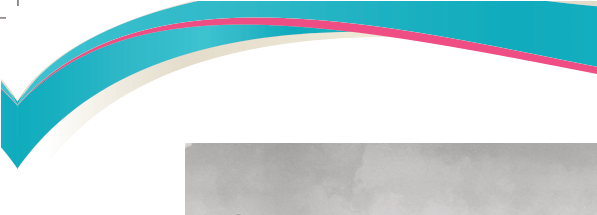
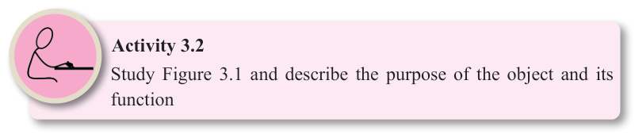
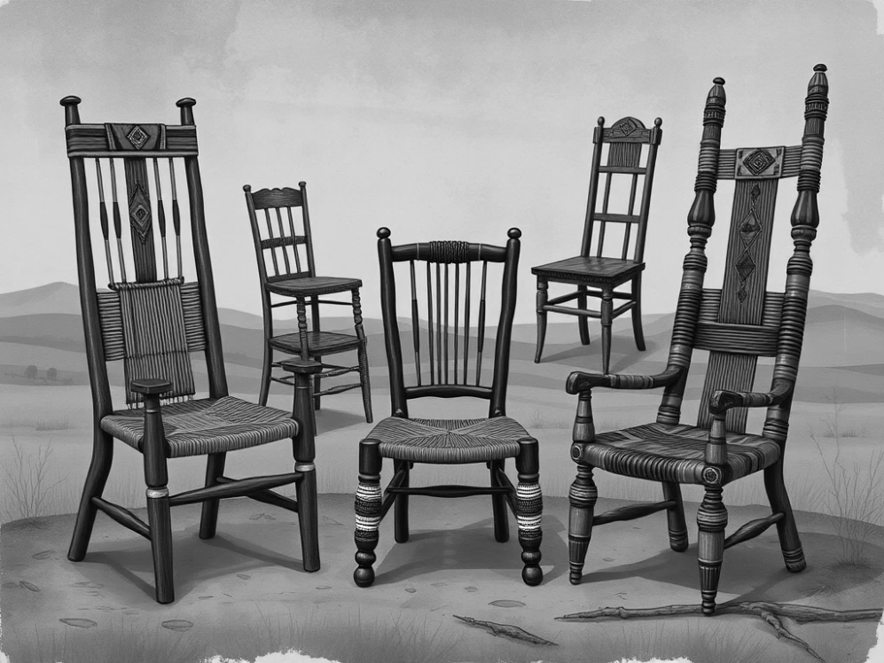

Figure 3.3: Functional drawings of chairs with both aesthetic and functional elements
(b) Functional drawings must be clear and precise to avoid misinterpretation.

Artists creatively imagine and compose a clear composition which can inspire
designers to manipulate it and create a new design based on the artwork. As such, a design is given both aesthetic view and functionality.
(c) A functional drawing is often hand-made. Artists who create art pieces such as this put a lot of time, effort, and skill into each piece. They use traditional
techniques and materials to create pieces that are both functional and beautiful.
They incorporate aesthetic principles and artistic design elements to create a visually appealing and pleasing object. This is why these pieces are often considered one-of-a-kind and can be quite valuable.
(d) A functional drawing is also a sustainable art form. Since functional drawings are designed to be used, they are less likely to be thrown away or discarded.
They are made to last and can be passed down from generation to generation.
This is why functional art pieces are often considered to be valuable as they combine aesthetics and utility.
Activity 3.2
Study Figure 3.1 and describe the purpose of the object and its function